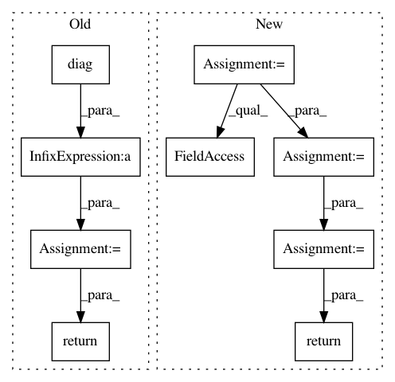

39c16df4d13f716bd6e1c4702e32890cb5944917,geomstats/geometry/dirichlet_distributions.py,DirichletMetric,metric_matrix,#DirichletMetric#Any#,116
Before Change
"metric matrix")
ones_mat = gs.ones((self.dim, self.dim))
sum_param = gs.sum(base_point, -1)
mat = diag(gs.polygamma(1, base_point)) \
- gs.polygamma(1, sum_param) * ones_mat
return mat
def christoffels(self, base_point):
Compute the Christoffel symbols.
After Change
if base_point is None:
raise ValueError("A base point must be given to compute the "
"metric matrix")
base_point = gs.to_ndarray(base_point, to_ndim=2)
n_points = base_point.shape[0]
mat_ones = gs.ones((n_points, self.dim, self.dim))
poly_sum = gs.polygamma(1, gs.sum(base_point, -1))
mat_diag = gs.zeros((n_points, self.dim, self.dim))
diag = gs.einsum("ijj->ij", mat_diag)
diag[:] = gs.polygamma(1, base_point)
mat = mat_diag - gs.einsum("i,ijk->ijk", poly_sum, mat_ones)
return gs.squeeze(mat)
def christoffels(self, base_point):
Compute the Christoffel symbols.
In pattern: SUPERPATTERN
Frequency: 3
Non-data size: 9
Instances
Project Name: geomstats/geomstats
Commit Name: 39c16df4d13f716bd6e1c4702e32890cb5944917
Time: 2020-11-19
Author: alice.le-brigant@enac.fr
File Name: geomstats/geometry/dirichlet_distributions.py
Class Name: DirichletMetric
Method Name: metric_matrix
Project Name: uber/pyro
Commit Name: d7148f390db12a3f7e4b43ab584648b2e4a1882d
Time: 2020-11-07
Author: fritz.obermeyer@gmail.com
File Name: pyro/distributions/spanning_tree.py
Class Name: SpanningTree
Method Name: log_partition_function
Project Name: cornellius-gp/gpytorch
Commit Name: 8c40ed8fb56baef7ab5ce8d5ed85bb10e4f09174
Time: 2020-12-16
Author: wjm363@nyu.edu
File Name: gpytorch/lazy/kronecker_product_lazy_tensor.py
Class Name: KroneckerProductLazyTensor
Method Name: root_decomposition